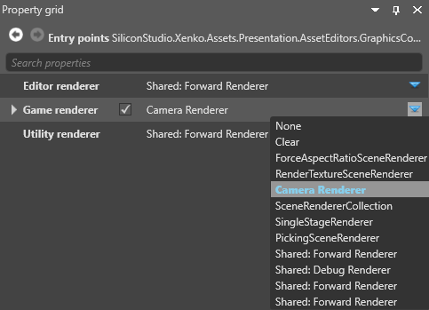
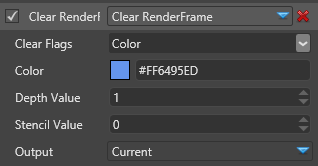
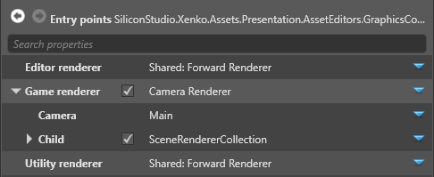
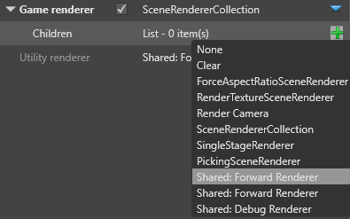
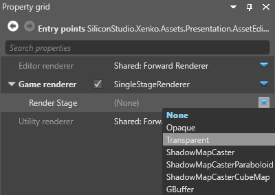
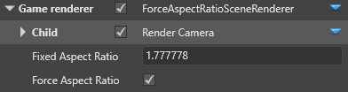
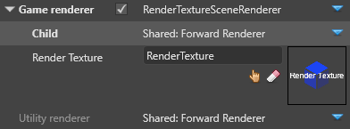

シーン レンダラー
中級 デザイナー
シーンレンダラーを使うと、レンダリングの 収集(collect) と 描画(draw) のフェーズをカスタマイズすることができます。これらのフェーズの詳細については、レンダーの機能を参照してください。
シーンレンダラーの選択は、Entry Points ノードのプロパティで行います。

レンダラーの選択については、グラフィックス コンポジターを参照してください。
Note
今のところは、すべてのレンダラーは、カメラを持っているか、カメラを持っているレンダラーの子でなければなりません。これは、シングルステージレンダラー（UI のレンダリングなど）のように、必ずしもカメラを使用しないレンダラーでも同様です。
クリアする
単色でフレームをクリアします。

プロパティ
| プロパティ | 説明 |
|---|---|
| Clear flags | クリアする対象（Color only, Depth only, Color and depth のいずれか）。 |
| Color | 色テクスチャーのクリアに使用される色（Clear Flags が Color または Color and depth の場合のみ有効）。 |
| Depth value | 深度テクスチャーのクリアに使用される深度値。 |
| Stencil value | ステンシルテクスチャーのクリアに使用されるステンシル値。 |
カメラ レンダラー
カメラスロットのビューをレンダリングするには、Child を使用します。レンダーカメラは、シーン内のカメラから、表示用の入力を受け取ります。

プロパティ
| プロパティ | 説明 |
|---|---|
| Camera | レンダリングに使用するカメラスロット。 |
| Child | カメラ用のレンダラー（フォワードレンダラーやカスタムレンダラーなど）。 |
シーン レンダラー コレクション
シーンレンダラーコレクションは、複数のレンダラー（カメラレンダラーやレンダーテクスチャーなど）を、順番に実行します。これにより、1つのエントリポイントに複数のレンダラーを設定することができます。このコレクションには、必要な数だけレンダラーを追加できます。
Note
Stride は、レンダラーをリスト順に実行します。
コレクションにレンダラーを追加するには、Children の横にある  （追加）をクリックし、追加したいレンダラーを選択します。
（追加）をクリックし、追加したいレンダラーを選択します。

フォワード レンダラー
一般的な設定では、シーンのほぼすべてのレンダリングにフォワードレンダラーを使用します。レンダリングする順番は次の通りです。
- 不透明オブジェクト
- 透明オブジェクト
- ポストエフェクト
フォワードレンダラーは、VRオプションを設定する場所でもあります。詳しくは、バーチャルリアリティーをご覧ください。
フォワードレンダラーのプロパティは、フォワードレンダラーノードで設定します。
シングルステージレンダラー

アスペクト比強制変更シーンレンダラー
ForceAspectRatioSceneRenderer を使用して、アスペクト比を強制することができます。その比率が画面と異なる場合にはレターボックスが適用されます。これは、レンダーカメラの前に使用します。

| プロパティ | 説明 |
|---|---|
| Child | カメラ用のレンダラー（フォワードレンダラーやカスタムレンダラーなど） |
| Fixed aspect ratio | ビューに設定するアスペクト比 |
| Force aspect ratio | オンにすると強制アスペクト比が有効 |
レンダー テクスチャー
レンダーテクスチャーにレンダリングを行い、それをシーンに表示することができます（例：防犯カメラの映像をスクリーンに表示する）。詳細については、レンダー テクスチャーを参照してください。

| プロパティ | 説明 |
|---|---|
| Child | カメラ用のレンダラー（フォワードレンダラーやカスタムレンダラーなど） |
| Render texture | レンダリング先のテクスチャー |
レンダー マスク

レンダーマスクは、レンダリングするグループをフィルタリングします。これを使うと、特定のモデルだけをレンダリングすることができます。詳細については、レンダーグループとレンダーマスクを参照してください。